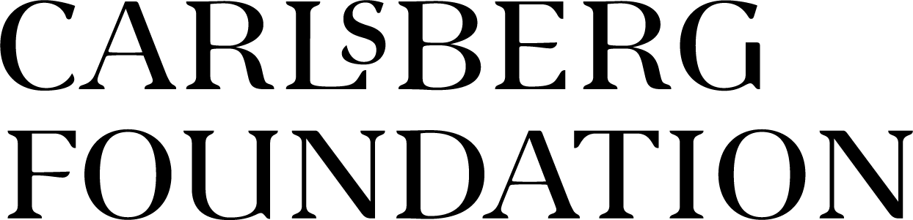

2026 Econometric Models of Climate Change Conference
EMCC-X
The 10th Conference on Econometric Models of Climate Change (EMCC-X) will be held at Aalborg University, Denmark, on August 20-21, 2026.
The conference will be held at CREATE, Department of Architecture, Design, and Media Technology at Aalborg University. Rendsburggade 14, 9000 Aalborg.
Draft Program (version as of August 19, 2026)
Day 1 - 20th of August
08:30-09:00 Registration Open
09:00-09:20 Welcome
09:20-10:20 Talk Slot 1: Climate Econometrics and Applied Evidence
- Alessandro Giovannelli (University of L’Aquila) — Forecasting ENSO with High-Dimensional time series.
- Feridoon Koohi-Kamali (Ontofuture.org and New School for Social Research) — The dynamic common correlated effects estimation of budget-neutral environmental policy & risk preference for transition to a low carbon economy, with application to the OECD.
- Mikkel Bennedsen (Aarhus University) — The kinematics of global temperature: Semiparametric analysis of trend, warming rate, and acceleration.
10:20-10:50 Break
10:50-12:00 Spotlight Slot 1: Methods in Climate Time-Series Econometrics
- José Alves (ISEG - Lisbon School of Economics and Management) — Climate Resilience and the Adaptation Trap: A Macroeconomic Framework for Joint Fiscal–External Sustainability.
- Giacomo Toscano (University of Florence) — Nonparametric estimation of temperature shock volatility.
- Yin Shi (University of Victoria) — Forecasting Carbon Dioxide Emissions in Canada: An Empirical Macroeconomic Framework.
- Dennis Cordes (Universiteit van Amsterdam) — Modeling Peer Effects in Residential Solar Panel Adoption.
- Ruriko Yoshida (Naval Postgraduate School/Aalborg University) — Inference on Edge Weights and Temporal Lags in Discrete Max-Linear Bayesian Networks.
- Cheyenne Amoroso (Universidade da Coruña) — A Dynamic Nonlinear Panel Decomposition Model for the Global Environmental Kuznets Curve.
- Sebastian Mathias Jensen (Aarhus University) — Neural networks for nonlinear regression with serially correlated disturbances: Evidence from cloud cover.
12:00-13:00 Lunch
13:00-14:00 Talk Slot 2: Arctic Dynamics and Sea Ice
- Alessandra Canepa (University of Turin) — From Shocks to Feedbacks: Regime-Dependent Persistence in Arctic Temperature Anomalies.
- Siem Jan Koopman (Vrije Universiteit Amsterdam) — An assessment of statistical predictive models for Arctic sea ice projections.
- Felix Pretis (University of Victoria) — From Melting Point to Tipping Point: Sea Ice, Shipping, and Emissions in the Arctic.
14:00-14:30 Break
14:30-15:40 Spotlight Slot 2: Climate-Growth and Macroeconomic Impacts
- Sachintha Fernando (Martin Luther University Halle-Wittenberg) — Donor Pool Selection in Synthetic Controls: Lessons from Carbon tax Evaluations.
- Stefano Ninfole (NMBU - Norwegian University of Life Sciences) — Econometric Modelling of Norwegian CO2 Emissions.
- Haodong Qi (Malmo University) — Climate Risks and Subjective Well-being: Insights from Human Flourishing Geographic Index (USA, 2013-2023).
- Dhruv Akshay Pandit (NOVA Information Management School, Universidade de Nova Lisboa) — The impacts of weather anomalies on international tourism demand.
- Francisco Javier Martinez Ramirez (Bank of Mexico) — The effects of temperature and rainfall anomalies on macroeconomic variables: The case of Mexico.
- Niki Demosthenous (University of Cyprus) — Heterogeneous Firms’ Expectations Responses to Climate News.
- Marina Friedrich (Vrije Universiteit Amsterdam) — Evaluating the robustness of REDD+ project impacts on avoided deforestation in Amazonian Brazil across synthetic control methods.
15:40-16:10 Break
16:10-17:30 Talk Slot 3: Extremes, Hazards, and Adaptation
- Moritz Schwarz (TU Berlin / PIK Potsdam) — Using the statistical IAM-emulator statIAM to empirically constrain energy system results.
- Marco Bidoia (Ca’ Foscari - University of Venice) — Dynamic Models for Climate Extremes.
- Chenhui Wang (Vrije Universiteit Amsterdam) — Estimation and inference for the persistence of extremely high temperatures.
- Markus Fritsch (University of Passau) — On the process of threshold exceedances of precipitation series under unknown heterogeneity and dependence.
17:30 END OF DAY 1
18:30 Dinner at Det Glade Vanvid.
Day 2 - 21st of August
09:00-09:20 Welcome
09:20-10:20 Talk Slot 4: Climate-Growth and Macroeconomic Impacts
- Marius Just (Aarhus University) — Evidence on the Climate-Growth Relationship.
- Menghan Yuan (Nord University) — Interactive Climate Effects on Economic Growth.
- C. Vladimir Rodríguez-Caballero (ITAM) — Economic Outlook from Climate Conditions.
10:20-10:50 Break
10:50-11:50 Spotlight Slot 3: Energy Systems and Renewable Transitions
- Diego Alejandro Prieto Melo (Brandenburg University of Technology Cottbus-Senftenberg) — Quantifying the Quiet Creep: Degradation of 15,000 Wind Turbines in Germany.
- Shanmukha Srinivas Byrukuri Gangadhar (Brandenburg University of Technology Cottbus-Senftenberg) — Experience with Extreme Events and Wind Energy Impact: Causal Evidence from Flood Exposure, Wind Energy, and Housing Markets.
- Carolina García-Martos (UPM - Technical University of Madrid) — Structural Changes in Trend-Seasonal Decompositions for Climate and Energy Time Series.
- Reza Modarres (Isfahan University of Technology) — Meteorological drought volatility in Iranian areas has either increased or decreased during 1952-2022.
- Sania Wadud (University of Leeds) — Ambiguity in China’s Climate Policy Discourse: A Provincial Level Analysis.
- Matthias Wirth (University of Hohenheim) — Recovering continuous-time parameters of a k-box energy balance model from a discrete-time CVAR.
11:50-12:00 Group Photo
12:00-13:00 Lunch
13:00-14:00 Talk Slot 5: Carbon, Emissions, and Climate Policy
- Paul Haimerl (Aarhus University) — Identifying the Carbon Sink Saturation Threshold.
- Tobias Eibinger (University of Graz) — Zero fare, cleaner air? The causal effect of free public transportation on transport emissions.
- Bent Jesper Christensen (Aarhus University) — Intermittency and the potential of wind energy for CO2 abatement.
14:00-14:30 Break
14:30-15:30 Talk Slot 6: Methods in Climate Time-Series Econometrics
- Giovanni Urga (Bayes Business School, University of London) — Common Green Bubbles Detection in Real Time.
- Philipp Sibbertsen (Leibniz University of Hannover) — Change-Point Testing for Spectral Densities under Cyclical Long Memory.
- Tommaso Proietti (University of Rome Tor Vergata) — Trend Filtering with Fractional Splines.
15:30-15:45 Closing Remarks
15:45 END OF CONFERENCE
Organising Committee
Local Organisers
- Olivia Kvist, PhD Student in Climate Econometrics, Aalborg University, Denmark.
- J. Eduardo Vera-Valdés, Associate Professor of Mathematics-Economics, Aalborg University, Denmark.
Conference Board
- Marina Friedrich, Vrije Universiteit Amsterdam, The Netherlands
- Eric Hillebrand, Aarhus University, Denmark
- Felix Pretis, University of Victoria, Canada
- Tommaso Proietti, U. degli Studi di Roma “Tor Vergata”, Italy
Join the Research Network
Sign up to the Research Network Mailing list to stay up-to-date.
Sponsors
This event is supported by the Danish Data Science Academy DDSA and Carlsberg Foundation (Grant CF25-2085).

